Прошлый набор держался на слове в рукописной гарнитуре и знаке
сверху. Мне кажется, у клуба есть кое-что сильнее букв — X: он уже в
названии, он же плёнка, скрещенная на склейке, он же перекрестье на лидере,
он же два скрещённых луча в зале. Ниже десять картинок, где X становится
знаком, а не буквой, — и объяснение, почему каждая работает.
Почему именно X. В слове «СИНХРОН» X стоит ровно в
середине — это ось слова, точка, где встречаются «СИНХ» и «РОН». Оптический
звук, склейка, перекрестье кадра, два луча проекторов — всё это крест.
Логотип, который строится на нём, растёт прямо из названия: он не «добавлен»
к слову, он — его центр.
Два куска плёнки склеены крест-накрест — тот самый X, но не нарисованный, а сделанный из самого материала: тело плёнки, кадровые линии, перфорация по краям, полоска ленты на стыке. Слово «СИНХРОН» стоит под знаком и держит низ композиции.
Почему работает
X читается мгновенно и при 40 px, при этом он не «логотип дизайнера», а вещь из проекционной: понятная каждому, кто хоть раз клеил плёнку. Свет уходит только в центр, где лента — там и «синхрон».
Как снять руками
Снять макро: два обрезка 35-мм плёнки, скрещённые на чёрном стекле, контровой свет снизу, стык заклеить полоской медового скотча. Кроп квадрат, фон — чёрный бархат.
Два проектора бьют из нижних углов вверх, их лучи пересекаются ровно в центре и образуют X — не линию, а объём: свет с пылью, тёплый воздух, горячие ядра лучей.
Почему работает
Самая «живая» версия знака: она про сам сеанс, а не про графику. X держится геометрией лучей, слово — внизу, в темноте, между проекторами, и не спорит со знаком.
Как снять руками
Фотография: дым-машина или пыль в зале, две кинопроекционные лампы (или два фонаря) крест-накрест, объектив на длинной выдержке, чёрный фон, тёплый баланс 3200K.
Кадр 35-мм плёнки во всю ширину: чёрная лента, перфорация по краям и слово «СИНХРОН», выбитое дырками. За плёнкой — лампа, поэтому и буквы, и перфорация светятся тёплым: они и есть отверстия.
Почему работает
Одна и та же форма служит и шрифтом, и перфорацией — знак целиком из языка плёнки. Работает и как аватар, и как обложка: полоса растягивается в широкий баннер без переделки.
Как снять руками
Плоттерная резка трафарета из чёрной плёнки, буквы вырезаются и подсвечиваются тёплой лампой снизу; либо кадр на просвет на подсвеченном столе — и макро со штатива.
Советско-конструктивистская плашка: тёплая бумага, тонкие линейки, два угла надписей и семь одинаковых клеток слова на всю ширину. За буквой X — медовый круг, единственное цветное пятно.
Почему работает
Все деловые аватары тёмные — а этот светлый, и именно поэтому запоминается в ленте. Это «открывающий титр» кино-клуба: он выдерживает любой размер и любую печать.
Как снять руками
Это уже почти плакат: можно напечатать в двух цветах (чёрный + медовый) на крафте или бумаге 200 г и расклеить в лофте; фотография — плоская съёмка «сверху», ровный свет.
Две оптические дорожки звука (медовая и синяя) идут навстречу друг другу, пересекаются в центре — и в точке пересечения их волны совпадают: это и есть синхрон. Ромб в центре — замок фазы.
Почему работает
Единственная идея, которая объясняет название не картинкой, а смыслом: «синхрон» — когда две дорожки совпали. Плюс это самая графичная, «звуковая» версия X.
Как снять руками
Снять световой стол и оптическую дорожку 16-мм плёнки макро, две полосы положить крест-накрест; цифру синхронизации довести в графике.
Обод объектива (он же буква С, он же О, он же катушка) с вырезом справа, из выреза бьёт свет. Внутри обода — стекло, блик и слово «СИНХРОН», по ободу — гравировка.
Почему работает
Самый честный аватар: один знак, одна буква-круг, один луч. Читается в круге ВК и в 32 px, легко режется из одной формы: обод + вырез. Слова внутри держат имя группы.
Как снять руками
Макро-съёмка объектива на просвет: свет через диафрагму, чёрный фон, один тёплый импульс. Либо рисунок в векторе — печать в один цвет на чёрном.
Четыре лепестка диафрагмы сомкнуты не в круг, а в X, и сквозь эту щель идёт свет. По ободу объектива — гравировка: «СИНХРОН · КИНО-КЛУБ · ПСКОВ» и метки 2.8 / 4 / 5.6.
Почему работает
Здесь узнаваемое «колесо из четырёх лопастей» доведено до механизма: у знака появляется физика и оправдание — свет проходит сквозь крест. Много деталей для крупного размера, цельный силуэт для мелкого.
Как снять руками
Макро-фото диафрагмы старого объектива: прикрыть кольцо до щели, снять против света, фон чёрный; гравировку нанести лазером на металлическую пластину и снять как «деталь».
Псковское окно в дождь: холодное стекло, капли, переплёт с наклонными связями (это и есть X), а за стеклом — тёплое пятно экрана. Слово нанесено на стекло как трафарет.
Почему работает
Внутри знака живёт город и погода — то, зачем в кино-клуб вообще ходят: выйти из дождя в свет. X здесь архитектурный, а не графический, поэтому логотип не выглядит «нарисованным».
Как снять руками
Съёмка ночью: окно лофта, дождь (или пульверизатор), внутри — тёплая лампа/проектор, снаружи холодит фонарь. Трафарет на стекле — из малярного скотча, снять с длинной выдержкой.
Тёмный зал, на стене — светлое пятно экрана, и в этом пятне спроецировано слово. Перед светом стоит пустой стул: он перекрывает буквы снизу и превращает знак в приглашение.
Почему работает
Логотип про вторую половину кино-клуба — про обсуждение. Стул — самое сильное «пустое место» в композиции, оно работает как «тебя ждут», и это уже не знак, а афиша.
Как снять руками
Постановка: стул на стене с проекцией слова (шрифт на слайде), снять с одной тёплой лампы, стул — в контражуре. Свет только на стену, пол в темноте.
Классический кадр-лидер киноплёнки: круг, перекрестье-крест, стрелка счёта — и «СИНХРОН» ровно по центру круга, а по углам счётчик 24 и 1.
Почему работает
Каждый, кто смотрел плёнку, знает этот кадр изнутри — срабатывает узнавание жанра. Знак строится из перекрестья, значит X остаётся главным, но получает сюжет и время.
Как снять руками
Распечатать лидер на прозрачной плёнке и снять на просвет проектором; либо белым маркером/резкой на чёрном акриле — и повесить на стену лофта.
Аватар ВК обрезается кругом, поэтому каждая картинка
отдельно проверена в круглом кропе (420×420, прозрачный фон) —
logos/png/avatar/.
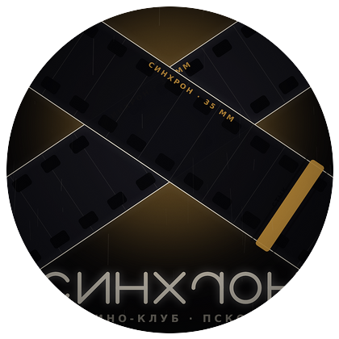
01 СКЛЕЙКА
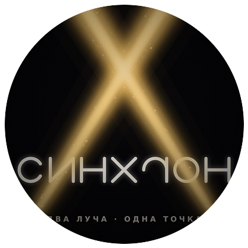
02 ЛУЧ
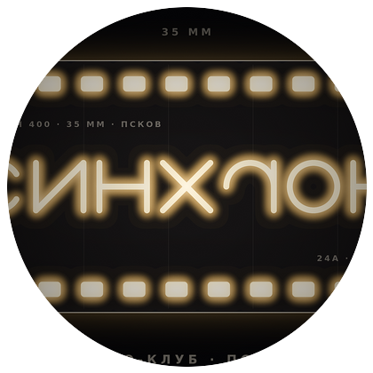
03 НЕГАТИВ
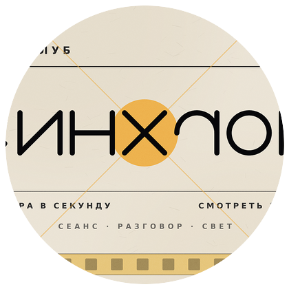
04 ТИТР
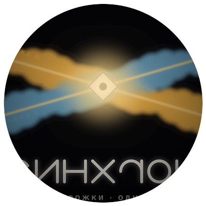
05 ФАЗА
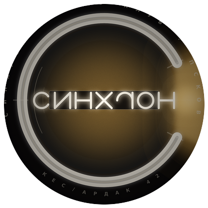
06 ОБОД
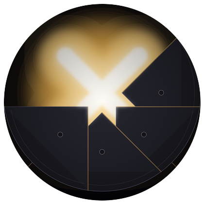
07 ДИАФРАГМА
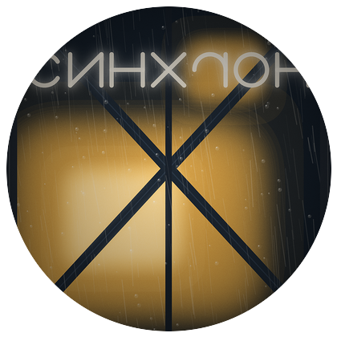
08 ОКНО
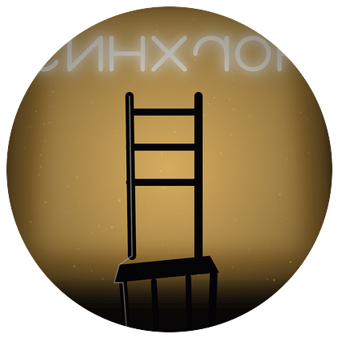
09 ПУСТОЙ СТУЛ
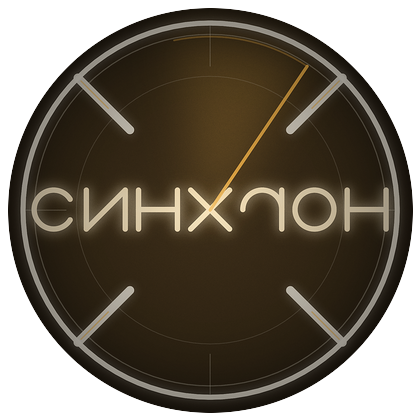
10 ЛИДЕР
Что было у «супер-пупер дизайнера»
Это не приговор — просто фиксация, от чего мы отталкиваемся.
Все четыре варианта — одно и то же слово в одной и той же рукописной
гарнитуре; меняется только знак и цвет.
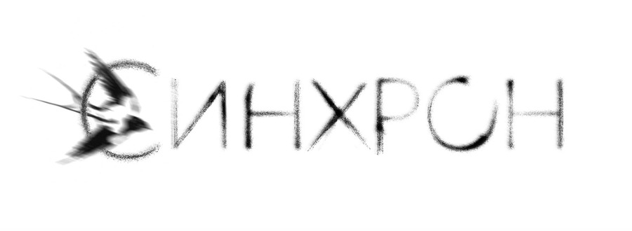
№1 — горизонт«Синхрон» идёт в горизонт, а под Я — птица/плёночный клубок. Сама идея линии хорошая, но она уводит вправо от кадра, и всё это — на белом фоне, а кадр кино — тёмный. Птица читается как случайное пятно.
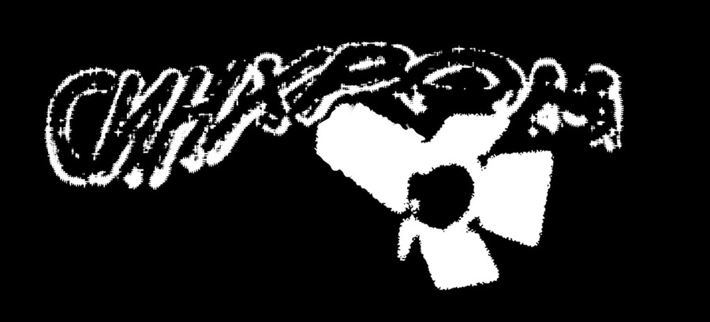
№2 — ч/б с диафрагмойДиафрагма-«прайд» крупнее слова и стоит на тексте, буквы «едут» по ней: знак дерётся со названием. Плюс два цвета инвертированы по-разному в одном наборе — в ленте это выглядит как два разных логотипа.
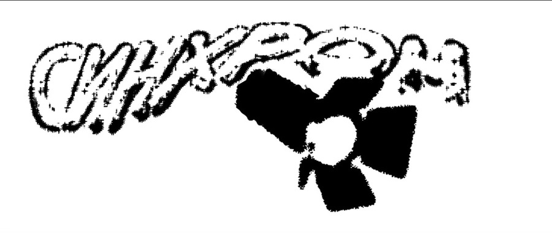
№3 — то же в реверсеЭто инверсия №2, то есть тот же файл наоборот. Как приём для «тёмной темы» — да, как отдельная идея — нет: на чёрном теряется градиентная фактура букв.
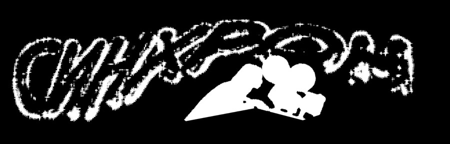
№4 — силуэтыПроектор и человек в кресле. Атмосфера есть, но в мелком размере это белое пятно: кресло не читается, а слово уползает вверх.
Общая беда всех четырёх: рукописные
буквы живут отдельно от знака, поэтому в мелком размере (аватар группы — это
200 px по кругу) они распадаются в пятно, а знак уезжает вверх или в центр
слова. Плюс смешение светлой и тёмной версии как двух «разных» логотипов.